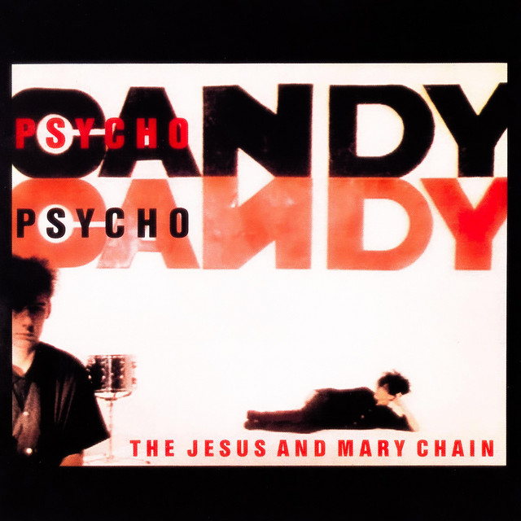

The Jesus and Mary Chain - Psychocandy



Información del álbum facilitada por discogs.com:
Fecha de lanzamiento: 1985
Géneros: Rock
Estilos: Indie Rock, Noise Rock
Tracklist:
A1. Just Like Honey
A2. The Living End
A3. Taste The Floor
A4. The Hardest Walk
A5. Cut Dead
A6. In A Hole
A7. Taste Of Cindy
B1. Never Understand
B2. Inside Me
B3. Sowing Seeds
B4. My Little Underground
B5. You Trip Me Up
B6. Something’s Wrong
B7. It’s So Hard